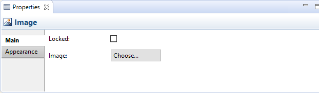
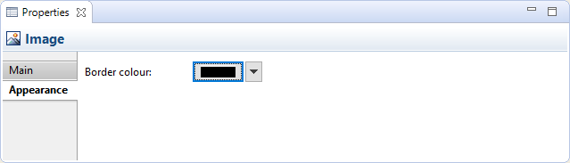

Image du canevas
Un objet image est un conteneur pour une image. Vous pouvez verrouiller l'objet image si vous voulez qu'il soit en lecture seule. Les images peuvent être de n'importe quelle taille mais nous vous conseillons de leur conserver une taille raisonnable pour éviter de consommer trop de ressources.
 Quand vous redimensionnez une image avec la souris, vous pouvez appuyer en même temps sur la touche Shift sans la relacher de façon à conserver ses proportions. Alternativement, vous pouvez sélectionner l'objet image puis cliquer sur l'entrée de menu "Vue->Réinitialiser les proportions" (également disponible via la barre d'outils).
Quand vous redimensionnez une image avec la souris, vous pouvez appuyer en même temps sur la touche Shift sans la relacher de façon à conserver ses proportions. Alternativement, vous pouvez sélectionner l'objet image puis cliquer sur l'entrée de menu "Vue->Réinitialiser les proportions" (également disponible via la barre d'outils).
Propriétés
Choisir une image dans la vue du canevas signifie que vous pouvez modifier ou voir les propriétés suivantes dans la fenêtre des propriétés.
L'onglet principal

Propriétés principales pour une image du canevas
| Verrouillée: |
Sélectionner ceci vous assure que l'image ne pourra pas être déplacée ou modifiée. |
| Image: |
Choisir une image pour l'élément ou effacer l'image. Voir ajouter des images aux éléments" pour plus de détails |
L'onglet apparence

Propriétés d'apparence pour une image du canevas
| Couleur de bordure: |
Définit la couleur de la bordure utilisée pour l'élément sélectionné. Le bouton "Aucune" supprime la bordure de l'élément. |